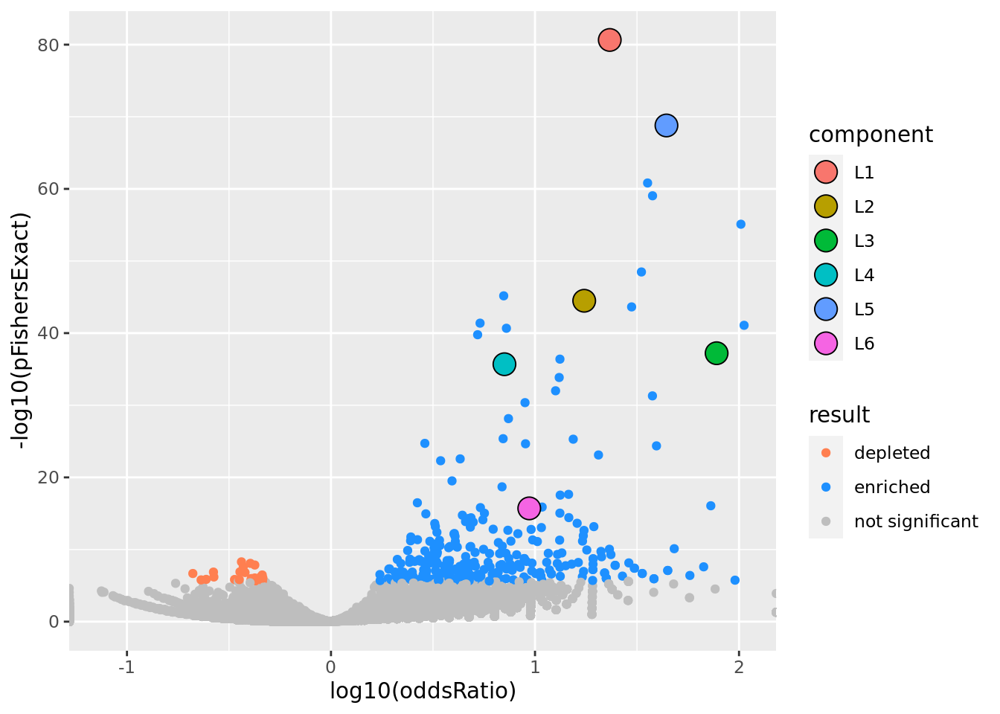
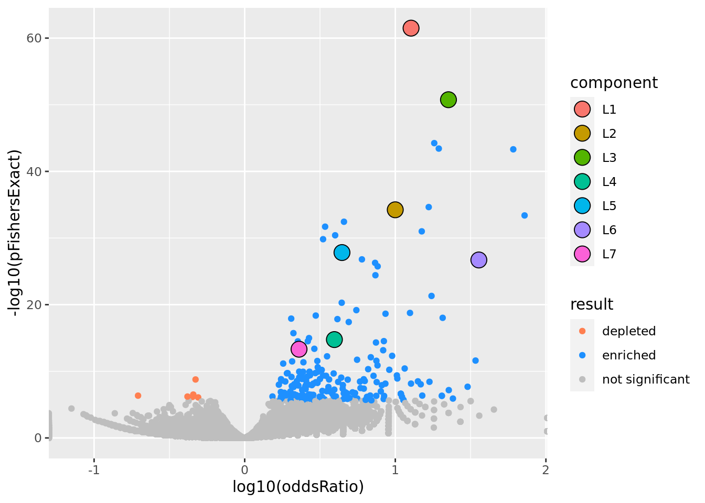
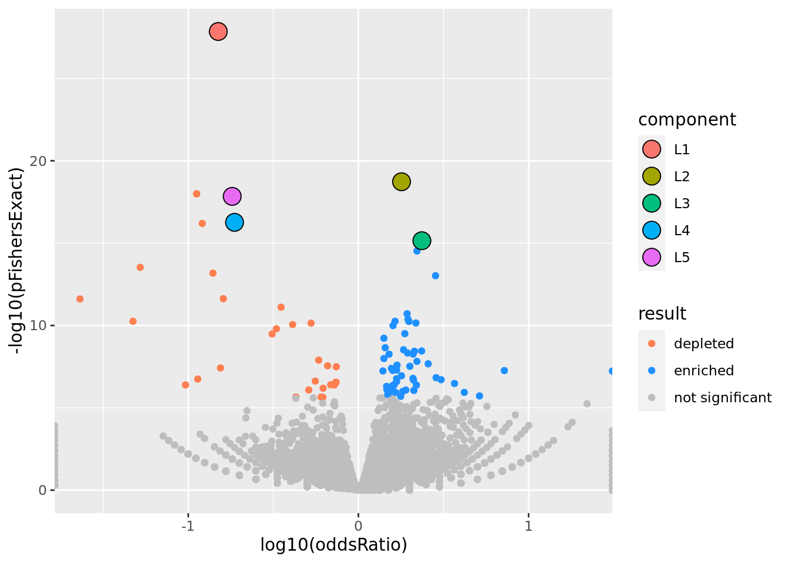

Baboon Diet Example
karltayeb
2022-03-16
Last updated: 2022-05-18
Checks: 7 0
Knit directory: logistic-susie-gsea/
This reproducible R Markdown analysis was created with workflowr (version 1.6.2). The Checks tab describes the reproducibility checks that were applied when the results were created. The Past versions tab lists the development history.
Great! Since the R Markdown file has been committed to the Git repository, you know the exact version of the code that produced these results.
Great job! The global environment was empty. Objects defined in the global environment can affect the analysis in your R Markdown file in unknown ways. For reproduciblity it’s best to always run the code in an empty environment.
The command set.seed(20220105) was run prior to running the code in the R Markdown file. Setting a seed ensures that any results that rely on randomness, e.g. subsampling or permutations, are reproducible.
Great job! Recording the operating system, R version, and package versions is critical for reproducibility.
Nice! There were no cached chunks for this analysis, so you can be confident that you successfully produced the results during this run.
Great job! Using relative paths to the files within your workflowr project makes it easier to run your code on other machines.
Great! You are using Git for version control. Tracking code development and connecting the code version to the results is critical for reproducibility.
The results in this page were generated with repository version b15f3c3. See the Past versions tab to see a history of the changes made to the R Markdown and HTML files.
Note that you need to be careful to ensure that all relevant files for the analysis have been committed to Git prior to generating the results (you can use wflow_publish or wflow_git_commit). workflowr only checks the R Markdown file, but you know if there are other scripts or data files that it depends on. Below is the status of the Git repository when the results were generated:
Ignored files:
Ignored: .RData
Ignored: .Rhistory
Ignored: _targets.R
Ignored: _targets.html
Ignored: _targets/objects/
Ignored: _targets/user/
Ignored: _targets/workspaces/
Ignored: _targets_r/
Ignored: cache/
Ignored: data/adipose_2yr_topsnp.txt
Ignored: data/chimp_human_eb_de/
Ignored: data/de-droplet-noshrink.RData
Ignored: data/deng/
Ignored: data/fetal_reference_cellid_gene_sets.RData
Ignored: data/human_chimp_eb/
Ignored: data/pbmc-purified/
Ignored: data/wenhe_baboon_diet/
Ignored: figure/
Ignored: library/
Untracked files:
Untracked: Rplots.pdf
Untracked: _targets/meta/
Untracked: clustrmq_slurm.sh
Untracked: l1.sim.aggregate.scores
Untracked: simulation_targets/
Unstaged changes:
Modified: _targets.Rmd
Modified: code/target_run_enrichment.R
Note that any generated files, e.g. HTML, png, CSS, etc., are not included in this status report because it is ok for generated content to have uncommitted changes.
These are the previous versions of the repository in which changes were made to the R Markdown (analysis/baboon_diet.Rmd) and HTML (docs/baboon_diet.html) files. If you’ve configured a remote Git repository (see ?wflow_git_remote), click on the hyperlinks in the table below to view the files as they were in that past version.
| File | Version | Author | Date | Message |
|---|---|---|---|---|
| Rmd | b15f3c3 | Karl Tayeb | 2022-05-18 | wflow_publish(“analysis/baboon_diet.Rmd”) |
| html | 6e2224f | karltayeb | 2022-04-12 | Build site. |
| Rmd | 5e3a4e3 | karltayeb | 2022-04-12 | wflow_publish(c(“analysis/index.Rmd”, “analysis/baboon_diet.Rmd”, |
| html | 26e6c28 | karltayeb | 2022-03-30 | Build site. |
| html | 1ee6003 | karltayeb | 2022-03-30 | Build site. |
| Rmd | 6798b78 | karltayeb | 2022-03-30 | wflow_publish(“analysis/baboon_diet.Rmd”) |
| html | 7d1a82b | karltayeb | 2022-03-30 | Build site. |
| Rmd | 1e5cfb0 | karltayeb | 2022-03-30 | wflow_publish(“analysis/baboon_diet.Rmd”) |
library(gseasusie)
library(ggplot2)
library(tidyverse)
library(targets)
tar_load(baboon_diet_enrichment_summary)
results <- baboon_diet_enrichment_summaryres <- results$enrichment_summary[[2]]
res <- res %>%
mutate(pval_marginal = 2*pnorm(-abs(effect_marginal/effect_se_marginal))) %>%
mutate(pval_residual = 2*pnorm(-abs(effect_residual/effect_se_residual)))
res %>% gseasusie::enrichment_volcano2()
res %>% gseasusie::residual_enrichment_histogram2()
res %>% gseasusie:::static_table()results <- results %>% arrange(experiment, ptop, db)
experiments <- results$experiment %>% unique()
for(this_experiment in experiments){
cat('\n')
cat('##', this_experiment)
sub_res <- results %>% filter(experiment == this_experiment)
N <- dim(sub_res)[1]
for (i in 1:N){
this_db <- sub_res$db[[i]]
this_ptop <- sub_res$ptop[[i]]
res <- sub_res$enrichment_summary[[i]]
cat("\n")
cat("### prop genes = ", this_ptop, ', db = ', this_db, "\n") # Create second level headings with the names.
volcano <- res %>% gseasusie::enrichment_volcano2()
hist <- res %>% filter(overlap > 0) %>% residual_enrichment_histogram2()
print(volcano)
print(hist)
cat("\n\n")
print(gseasusie:::static_table(res))
}
}Adipose
prop genes = 0.05 , db = all_msigdb

| Version | Author | Date |
|---|---|---|
| 6e2224f | karltayeb | 2022-04-12 |
| Version | Author | Date |
|---|---|---|
| 6e2224f | karltayeb | 2022-04-12 |
| geneSet | description | geneSetSize | overlap | logOddsRatio | beta | alpha | pip | pFishersExact | fisherRank |
|---|---|---|---|---|---|---|---|---|---|
| L1 | |||||||||
| M13283 | Liver selective genes | 203 | 104 | 1.37 | 1.82 | 1 | 1 | 2.24e-81 | 1 |
| L2 | |||||||||
| M2194 | Genes down-regulated in liver samples of liver-specific knockout of HNF4A [GeneID=3172]. | 138 | 63 | 1.24 | 2.06 | 1 | 1 | 3.25e-45 | 8 |
| L3 | |||||||||
| M7054 | Genes up-regulated specifically in human liver tissue. | 44 | 35 | 1.89 | 2.96 | 1 | 1 | 6.08e-38 | 14 |
| L4 | |||||||||
| M38993 | Transcriptome of human HepaRG hepatocellular carcinoma liver progenitors in responses to a WNT3A-enriched microenvironment and dissection of pathways dependent on _-catenin and/or blocked by the SFRP-like Wnt inhibitor FZD8_CRD. | 335 | 84 | 0.85 | 1.22 | 1 | 1 | 2.04e-36 | 16 |
| L5 | |||||||||
| M14108 | Neighborhood of HPX | 108 | 73 | 1.64 | 1.95 | 0.998 | 0.998 | 1.61e-69 | 2 |
| L6 | |||||||||
| M2396 | Genes down-regulated in pancreatic islets upon knockout of HNF1A [GeneID=6927]. | 90 | 29 | 0.972 | 1.83 | 1 | 1 | 1.98e-16 | 38 |
prop genes = 0.1 , db = all_msigdb

| Version | Author | Date |
|---|---|---|
| 6e2224f | karltayeb | 2022-04-12 |
| geneSet | description | geneSetSize | overlap | logOddsRatio | beta | alpha | pip | pFishersExact | fisherRank |
|---|---|---|---|---|---|---|---|---|---|
| L1 | |||||||||
| M13283 | Liver selective genes | 203 | 115 | 1.1 | 1.44 | 1 | 1 | 3.2e-62 | 1 |
| L2 | |||||||||
| M2194 | Genes down-regulated in liver samples of liver-specific knockout of HNF4A [GeneID=3172]. | 138 | 71 | 1 | 1.62 | 1 | 1 | 5.79e-35 | 7 |
| L3 | |||||||||
| M14108 | Neighborhood of HPX | 108 | 76 | 1.35 | 1.58 | 0.982 | 0.982 | 1.76e-51 | 2 |
| L4 | |||||||||
| M15429 | Genes having at least one occurrence of the motif GGTTAATNWTTAMCN in the regions spanning 4 kb centered on their transcription starting sites [-2kb, +2kb]. This matches the TCF1 [GeneSymbol=TCF1] transcription factor binding site V$HNF1_01 (v7.4 TRANSFAC). | 205 | 61 | 0.596 | 1.13 | 1 | 1 | 1.74e-15 | 32 |
| L5 | |||||||||
| M38993 | Transcriptome of human HepaRG hepatocellular carcinoma liver progenitors in responses to a WNT3A-enriched microenvironment and dissection of pathways dependent on _-catenin and/or blocked by the SFRP-like Wnt inhibitor FZD8_CRD. | 335 | 106 | 0.646 | 0.942 | 1 | 1 | 1.52e-28 | 14 |
| L6 | |||||||||
| M7054 | Genes up-regulated specifically in human liver tissue. | 44 | 35 | 1.55 | 2.34 | 1 | 1 | 1.97e-27 | 16 |
| L7 | |||||||||
| M10712 | A small subcellular vesicle, surrounded by a membrane, that is formed from the Golgi apparatus and contains a highly concentrated protein destined for secretion. Secretory granules move towards the periphery of the cell and upon stimulation, their membranes fuse with the cell membrane, and their protein load is exteriorized. Processing of the contained protein may take place in secretory granules. [GOC:mah, ISBN:0198506732] | 668 | 130 | 0.361 | 0.677 | 0.983 | 0.983 | 4.85e-14 | 38 |
prop genes = 0.2 , db = all_msigdb
| geneSet | description | geneSetSize | overlap | logOddsRatio | beta | alpha | pip | pFishersExact | fisherRank |
|---|---|---|---|---|---|---|---|---|---|
| L1 | |||||||||
| M13283 | Liver selective genes | 203 | 130 | 0.87 | 1.5 | 1 | 1 | 4.92e-43 | 1 |
| L2 | |||||||||
| M2194 | Genes down-regulated in liver samples of liver-specific knockout of HNF4A [GeneID=3172]. | 138 | 86 | 0.832 | 1.49 | 1 | 1 | 1.37e-27 | 6 |
| L3 | |||||||||
| M11266 | Lysosome | 110 | 50 | 0.528 | 1.17 | 0.998 | 0.998 | 1.85e-09 | 56 |
| L4 | |||||||||
| M7054 | Genes up-regulated specifically in human liver tissue. | 44 | 38 | 1.41 | 2.33 | 1 | 1 | 4.4e-21 | 11 |
| L5 | |||||||||
| M13558 | Any process that results in a change in state or activity of a cell or an organism (in terms of movement, secretion, enzyme production, gene expression, etc.) as a result of an oxygen-containing compound stimulus. [GOC:pr, GOC:TermGenie] | 1310 | 369 | 0.217 | 0.379 | 0.999 | 0.999 | 1.49e-13 | 24 |
| L7 | |||||||||
| M15429 | Genes having at least one occurrence of the motif GGTTAATNWTTAMCN in the regions spanning 4 kb centered on their transcription starting sites [-2kb, +2kb]. This matches the TCF1 [GeneSymbol=TCF1] transcription factor binding site V$HNF1_01 (v7.4 TRANSFAC). | 205 | 85 | 0.461 | 0.882 | 0.999 | 0.999 | 1.57e-12 | 27 |
prop genes = 0.5 , db = all_msigdb

| geneSet | description | geneSetSize | overlap | logOddsRatio | beta | alpha | pip | pFishersExact | fisherRank |
|---|---|---|---|---|---|---|---|---|---|
| L1 | |||||||||
| M13283 | Liver selective genes | 203 | 160 | 0.578 | 1.15 | 1 | 1 | 2.94e-17 | 1 |
| L2 | |||||||||
| M567 | SRP-dependent cotranslational protein targeting to membrane | 100 | 16 | -0.724 | -1.51 | 0.953 | 0.953 | 1.3e-12 | 3 |
| L3 | |||||||||
| M39417 | Electron transport chain: OXPHOS system in mitochondria | 63 | 9 | -0.781 | -1.55 | 0.936 | 0.936 | 3.29e-09 | 24 |
| M18264 | Genes involved in oxidative phosphorylation; based on literature and sequence annotation resources and converted to Affymetrix HG-U133A probe sets. | 57 | 9 | -0.729 | -0.0372 | 0.0244 | 0.0248 | 8.47e-08 | 43 |
Liver
prop genes = 0.05 , db = all_msigdb

| geneSet | description | geneSetSize | overlap | logOddsRatio | beta | alpha | pip | pFishersExact | fisherRank |
|---|---|---|---|---|---|---|---|---|---|
| L1 | |||||||||
| M8295 | Neighborhood of TTN | 25 | 22 | 2.16 | 4.25 | 1 | 1 | 3.52e-26 | 5 |
| L2 | |||||||||
| M12628 | A process in which force is generated within muscle tissue, resulting in a change in muscle geometry. Force generation involves a chemo-mechanical energy conversion step that is carried out by the actin/myosin complex activity, which generates force through ATP hydrolysis. [GOC:ef, GOC:mtg_muscle, ISBN:0198506732] | 286 | 71 | 0.837 | 1.45 | 0.999 | 0.999 | 1.55e-30 | 1 |
| L3 | |||||||||
| M9898 | Set ‘Suz12 targets’: genes identified by ChIP on chip as targets of the Polycomb protein SUZ12 [GeneID=23512] in human embryonic stem cells. | 711 | 97 | 0.521 | 1.07 | 1 | 1 | 4.54e-20 | 9 |
| L4 | |||||||||
| M17471 | Genes up-regulated in invasive ductal carcinoma (IDC) relative to ductal carcinoma in situ (DCIS, non-invasive). | 314 | 52 | 0.601 | 1.22 | 1 | 1 | 1.6e-14 | 43 |
prop genes = 0.1 , db = all_msigdb

| geneSet | description | geneSetSize | overlap | logOddsRatio | beta | alpha | pip | pFishersExact | fisherRank |
|---|---|---|---|---|---|---|---|---|---|
| L1 | |||||||||
| M1920 | Genes forming the macrophage-enriched metabolic network (MEMN) claimed to have a causal relationship with the metabolic syndrom traits. | 1080 | 241 | 0.466 | 0.785 | 1 | 1 | 7.26e-36 | 1 |
| L10 | |||||||||
| M2009 | Genes with high-CpG-density promoters (HCP) bearing histone H3 trimethylation mark at K27 (H3K27me3) in neural progenitor cells (NPC). | 226 | 58 | 0.505 | 1.04 | 1 | 1 | 8.7e-12 | 145 |
| L2 | |||||||||
| M8295 | Neighborhood of TTN | 25 | 23 | 2.02 | 3.83 | 1 | 1 | 2.09e-21 | 19 |
| L3 | |||||||||
| M5389 | Genes whose expression increases with age in normal kidney. | 413 | 122 | 0.606 | 0.99 | 1 | 1 | 1.38e-29 | 4 |
| L4 | |||||||||
| M42761 | Any process that modulates the frequency, rate or extent of the directed movement of ions from one side of a membrane to the other. [GOC:mah] | 362 | 97 | 0.54 | 0.706 | 0.764 | 0.764 | 2.65e-20 | 28 |
| M15848 | Any process that modulates the frequency, rate or extent of the directed movement of charged atoms or small charged molecules into, out of or within a cell, or between cells, by means of some agent such as a transporter or pore. [GOC:jl] | 513 | 123 | 0.479 | 0.126 | 0.162 | 0.162 | 7.64e-21 | 22 |
| M16782 | Any process that modulates the frequency, rate or extent of the directed movement of a solute from one side of a membrane to the other. [GOC:mah] | 437 | 107 | 0.488 | 0.0606 | 0.0732 | 0.0733 | 6.81e-19 | 36 |
| L5 | |||||||||
| M1578 | Genes down-regulated in freshly isolated CD31- [GeneID=5175] (stromal stem cells from adipose tissue) versus the CD31+ (non-stem) counterparts. | 188 | 58 | 0.618 | 1.24 | 1 | 1 | 1.43e-15 | 64 |
| L6 | |||||||||
| M17471 | Genes up-regulated in invasive ductal carcinoma (IDC) relative to ductal carcinoma in situ (DCIS, non-invasive). | 314 | 105 | 0.682 | 0.911 | 1 | 1 | 1.45e-30 | 3 |
| L7 | |||||||||
| M6298 | Fibers, composed of actin, myosin, and associated proteins, found in cells of smooth or striated muscle. [GOC:go_curators, ISBN:0815316194] | 212 | 76 | 0.721 | 1.22 | 1 | 1 | 1.53e-24 | 10 |
| L8 | |||||||||
| M29940 | Genes containing one or more binding sites for UniProt:Q9BTC0 (DIDO1) in their promoter regions (TSS -1000,+100 bp) as identified by GTRD version 20.06 ChIP-seq harmonization. | 1300 | 30 | -0.708 | -1.13 | 1 | 1 | 2.16e-29 | 5 |
| L9 | |||||||||
| M42508 | List of 1130 human and mouse housekeeping genes. This list shows the overlap of human genes stably expressed across 52 tissues and cells types and mouse genes with at least one of their transcripts expressed across 14 tissues and cells types. | 1070 | 16 | -0.897 | -1.3 | 1 | 1 | 6.51e-31 | 2 |
prop genes = 0.2 , db = all_msigdb
| geneSet | description | geneSetSize | overlap | logOddsRatio | beta | alpha | pip | pFishersExact | fisherRank |
|---|---|---|---|---|---|---|---|---|---|
| L1 | |||||||||
| M8838 | Immune (humoral) and inflammatory response. | 445 | 220 | 0.619 | 0.801 | 1 | 1 | 2.21e-45 | 1 |
| L10 | |||||||||
| M3268 | Top 200 marker genes up-regulated in the ‘proliferation’ subclass of hepatocellular carcinoma (HCC); characterized by increased proliferation, high levels of serum AFP [GeneID=174], and chromosomal instability. | 163 | 69 | 0.475 | 1.12 | 1 | 1 | 7.14e-11 | 176 |
| L11 | |||||||||
| M40425 | Self-propelled movement of a cell or organism from one location to another. [GOC:dgh] | 1470 | 459 | 0.297 | 0.222 | 0.595 | 0.595 | 1.81e-27 | 15 |
| M40389 | The controlled self-propelled movement of a cell from one site to a destination guided by molecular cues. Cell migration is a central process in the development and maintenance of multicellular organisms. [GOC:cjm, GOC:dph, GOC:ems, GOC:pf, Wikipedia:Cell_migration] | 1220 | 398 | 0.322 | 0.16 | 0.403 | 0.403 | 6.79e-28 | 12 |
| L12 | |||||||||
| M15549 | Genes turned on in Hep3B cells (hepatocellular carcinoma, HCC) upon knockdown of SDHB [GeneID=6390] by RNAi. | 105 | 54 | 0.633 | 1.19 | 0.998 | 0.998 | 6.35e-13 | 114 |
| L13 | |||||||||
| M2200 | Genes enriched at every T lymphocyte differentiation stage compared to the early passage fetal thymic stromal cultures (TSC). | 175 | 89 | 0.628 | 0.977 | 0.999 | 0.999 | 5.51e-20 | 31 |
| L14 | |||||||||
| M15848 | Any process that modulates the frequency, rate or extent of the directed movement of charged atoms or small charged molecules into, out of or within a cell, or between cells, by means of some agent such as a transporter or pore. [GOC:jl] | 513 | 191 | 0.393 | 0.612 | 0.997 | 0.997 | 2.9e-20 | 30 |
| L15 | |||||||||
| M39608 | Cholesterol biosynthesis pathway | 14 | 10 | 1 | 2.72 | 0.909 | 0.909 | 4.56e-05 | 918 |
| M763 | Genes in the cancer module 432. | 15 | 10 | 0.904 | 0.065 | 0.0258 | 0.0259 | 0.000112 | 1090 |
| M16227 | Cholesterol biosynthesis | 23 | 12 | 0.641 | 0.0359 | 0.0175 | 0.0176 | 0.000591 | 1500 |
| L2 | |||||||||
| M1920 | Genes forming the macrophage-enriched metabolic network (MEMN) claimed to have a causal relationship with the metabolic syndrom traits. | 1080 | 407 | 0.426 | 0.697 | 1 | 1 | 4.39e-45 | 2 |
| L3 | |||||||||
| M8513 | Genes up-regulated in the normal-like subtype of breast cancer. | 400 | 199 | 0.622 | 0.916 | 1 | 1 | 1.39e-41 | 3 |
| L4 | |||||||||
| M8295 | Neighborhood of TTN | 25 | 25 | Inf | 5.75 | 1 | 1 | 3.08e-18 | 39 |
| L5 | |||||||||
| M9232 | The component of the plasma membrane consisting of the gene products and protein complexes having either part of their peptide sequence embedded in the hydrophobic region of the membrane or some other covalently attached group such as a GPI anchor that is similarly embedded in the membrane. [GOC:dos, GOC:mah] | 1240 | 404 | 0.322 | 0.377 | 0.997 | 0.997 | 2.91e-28 | 10 |
| L6 | |||||||||
| M29955 | Genes containing one or more binding sites for UniProt:Q15723 (ELF2) in their promoter regions (TSS -1000,+100 bp) as identified by GTRD version 20.06 ChIP-seq harmonization. | 1220 | 107 | -0.443 | -0.65 | 1 | 1 | 8.23e-29 | 7 |
| L7 | |||||||||
| M13283 | Liver selective genes | 203 | 5 | -1 | -2.44 | 1 | 1 | 7.08e-14 | 98 |
| L8 | |||||||||
| M17471 | Genes up-regulated in invasive ductal carcinoma (IDC) relative to ductal carcinoma in situ (DCIS, non-invasive). | 314 | 159 | 0.632 | 0.779 | 1 | 1 | 1.62e-34 | 4 |
| L9 | |||||||||
| M29940 | Genes containing one or more binding sites for UniProt:Q9BTC0 (DIDO1) in their promoter regions (TSS -1000,+100 bp) as identified by GTRD version 20.06 ChIP-seq harmonization. | 1300 | 112 | -0.453 | -0.658 | 1 | 1 | 2.16e-31 | 6 |
prop genes = 0.5 , db = all_msigdb

| geneSet | description | geneSetSize | overlap | logOddsRatio | beta | alpha | pip | pFishersExact | fisherRank |
|---|---|---|---|---|---|---|---|---|---|
| L1 | |||||||||
| M13283 | Liver selective genes | 203 | 27 | -0.824 | -1.74 | 1 | 1 | 1.41e-28 | 1 |
| L2 | |||||||||
| M1920 | Genes forming the macrophage-enriched metabolic network (MEMN) claimed to have a causal relationship with the metabolic syndrom traits. | 1080 | 681 | 0.253 | 0.535 | 1 | 1 | 1.88e-19 | 2 |
| L3 | |||||||||
| M8513 | Genes up-regulated in the normal-like subtype of breast cancer. | 400 | 279 | 0.373 | 0.753 | 1 | 1 | 7.12e-16 | 8 |
| L4 | |||||||||
| M2194 | Genes down-regulated in liver samples of liver-specific knockout of HNF4A [GeneID=3172]. | 138 | 22 | -0.728 | -1.38 | 1 | 1 | 5.48e-17 | 6 |
| L5 | |||||||||
| M16932 | Top 200 marker genes down-regulated in the ‘proliferation’ subclass of hepatocellular carcinoma (HCC); characterized by increased proliferation, high levels of serum AFP [GeneID=174], and chromosomal instability. | 148 | 23 | -0.742 | -1.31 | 1 | 1 | 1.45e-18 | 5 |
Muscle
prop genes = 0.05 , db = all_msigdb

| geneSet | description | geneSetSize | overlap | logOddsRatio | beta | alpha | pip | pFishersExact | fisherRank |
|---|---|---|---|---|---|---|---|---|---|
| L1 | |||||||||
| M13283 | Liver selective genes | 203 | 100 | 1.33 | 1.95 | 1 | 1 | 5.52e-76 | 1 |
| L2 | |||||||||
| M10917 | Neighborhood of HPN | 108 | 70 | 1.59 | 1.7 | 0.827 | 0.827 | 1.12e-64 | 2 |
| M132 | Neighborhood of LCAT | 101 | 65 | 1.58 | 0.344 | 0.165 | 0.166 | 9.04e-60 | 4 |
| L3 | |||||||||
| M624 | Genes that that have low expression in mammary tumors of epithelial-mesenchymal transition (EMT) histology. | 106 | 34 | 0.972 | 1.79 | 1 | 1 | 5.71e-19 | 37 |
| L4 | |||||||||
| M22767 | The directed movement of a C4-dicarboxylate into, out of or within a cell, or between cells, by means of some agent such as a transporter or pore. A C4-dicarboxylate is the anion of a dicarboxylic acid that contains four carbon atoms. [GOC:krc, GOC:mah] | 28 | 14 | 1.29 | 3.05 | 1 | 1 | 1.13e-11 | 85 |
| L5 | |||||||||
| M38993 | Transcriptome of human HepaRG hepatocellular carcinoma liver progenitors in responses to a WNT3A-enriched microenvironment and dissection of pathways dependent on _-catenin and/or blocked by the SFRP-like Wnt inhibitor FZD8_CRD. | 335 | 81 | 0.827 | 1.31 | 1 | 1 | 6.82e-34 | 16 |
| L6 | |||||||||
| M13014 | Genes down-regulated in liver tumor compared to the normal adjacent tissue. | 236 | 58 | 0.823 | 1.45 | 1 | 1 | 7.73e-25 | 23 |
| L7 | |||||||||
| M4306 | Genes down-regulated in HMLE cells (immortalized nontransformed mammary epithelium) after E-cadhedrin (CDH1) [GeneID=999] knockdown by RNAi. | 386 | 68 | 0.642 | 1.21 | 1 | 1 | 3.52e-20 | 31 |
| L8 | |||||||||
| M10829 | The chemical reactions and pathways involving an alpha-amino acid. [GOC:TermGenie] | 181 | 51 | 0.901 | 1.37 | 1 | 1 | 6.38e-25 | 22 |
prop genes = 0.1 , db = all_msigdb
| geneSet | description | geneSetSize | overlap | logOddsRatio | beta | alpha | pip | pFishersExact | fisherRank |
|---|---|---|---|---|---|---|---|---|---|
| L1 | |||||||||
| M13283 | Liver selective genes | 203 | 142 | 1.37 | 2.13 | 1 | 1 | 1.85e-95 | 1 |
| L10 | |||||||||
| M42508 | List of 1130 human and mouse housekeeping genes. This list shows the overlap of human genes stably expressed across 52 tissues and cells types and mouse genes with at least one of their transcripts expressed across 14 tissues and cells types. | 1070 | 21 | -0.775 | -1.16 | 1 | 1 | 6.61e-27 | 26 |
| L11 | |||||||||
| M2383 | Genes up-regulated in E12.5 forelimb buds with POR [GeneID=5447] knockout. | 24 | 14 | 1.1 | 2.4 | 0.977 | 0.977 | 7.03e-09 | 197 |
| L12 | |||||||||
| M2098 | Genes up-regulated in NB4 cells (acute promyelocytic leukemia, APL) in response to tretinoin [PubChem=444795]; based on Chip-seq data. | 501 | 104 | 0.392 | 0.753 | 1 | 1 | 3e-13 | 80 |
| L2 | |||||||||
| M2194 | Genes down-regulated in liver samples of liver-specific knockout of HNF4A [GeneID=3172]. | 138 | 85 | 1.18 | 1.79 | 1 | 1 | 3.03e-50 | 10 |
| L3 | |||||||||
| M10917 | Neighborhood of HPN | 108 | 92 | 1.74 | 1.8 | 0.81 | 0.81 | 6.79e-76 | 2 |
| M132 | Neighborhood of LCAT | 101 | 86 | 1.74 | 0.424 | 0.187 | 0.187 | 6.2e-71 | 4 |
| L4 | |||||||||
| M624 | Genes that that have low expression in mammary tumors of epithelial-mesenchymal transition (EMT) histology. | 106 | 44 | 0.817 | 1.73 | 1 | 1 | 1.52e-17 | 46 |
| L5 | |||||||||
| M38993 | Transcriptome of human HepaRG hepatocellular carcinoma liver progenitors in responses to a WNT3A-enriched microenvironment and dissection of pathways dependent on _-catenin and/or blocked by the SFRP-like Wnt inhibitor FZD8_CRD. | 335 | 126 | 0.768 | 1.11 | 1 | 1 | 9.58e-43 | 16 |
| L6 | |||||||||
| M22767 | The directed movement of a C4-dicarboxylate into, out of or within a cell, or between cells, by means of some agent such as a transporter or pore. A C4-dicarboxylate is the anion of a dicarboxylic acid that contains four carbon atoms. [GOC:krc, GOC:mah] | 28 | 18 | 1.21 | 2.77 | 1 | 1 | 4.46e-12 | 95 |
| L7 | |||||||||
| M1941 | Genes with high-CpG-density promoters (HCP) bearing histone H3 dimethylation at K4 (H3K4me2) and trimethylation at K27 (H3K27me3) in brain. | 882 | 163 | 0.338 | 0.727 | 1 | 1 | 2.07e-15 | 59 |
| L8 | |||||||||
| M13014 | Genes down-regulated in liver tumor compared to the normal adjacent tissue. | 236 | 82 | 0.701 | 1.15 | 1 | 1 | 2.45e-25 | 29 |
| L9 | |||||||||
| M16932 | Top 200 marker genes down-regulated in the ‘proliferation’ subclass of hepatocellular carcinoma (HCC); characterized by increased proliferation, high levels of serum AFP [GeneID=174], and chromosomal instability. | 148 | 78 | 1.02 | 1.43 | 1 | 1 | 2.64e-39 | 18 |
prop genes = 0.2 , db = all_msigdb
| geneSet | description | geneSetSize | overlap | logOddsRatio | beta | alpha | pip | pFishersExact | fisherRank |
|---|---|---|---|---|---|---|---|---|---|
| L1 | |||||||||
| M13283 | Liver selective genes | 203 | 164 | 1.25 | 1.76 | 1 | 1 | 1.26e-78 | 1 |
| L10 | |||||||||
| M1872 | Liver genes - metabolism and xenobiotics. | 449 | 231 | 0.656 | 0.72 | 1 | 1 | 1.49e-51 | 5 |
| L2 | |||||||||
| M2194 | Genes down-regulated in liver samples of liver-specific knockout of HNF4A [GeneID=3172]. | 138 | 99 | 1.02 | 1.52 | 1 | 1 | 1.36e-39 | 10 |
| L3 | |||||||||
| M38993 | Transcriptome of human HepaRG hepatocellular carcinoma liver progenitors in responses to a WNT3A-enriched microenvironment and dissection of pathways dependent on _-catenin and/or blocked by the SFRP-like Wnt inhibitor FZD8_CRD. | 335 | 168 | 0.625 | 0.918 | 1 | 1 | 9.57e-36 | 14 |
| L4 | |||||||||
| M624 | Genes that that have low expression in mammary tumors of epithelial-mesenchymal transition (EMT) histology. | 106 | 59 | 0.708 | 1.43 | 1 | 1 | 4.65e-16 | 35 |
| L5 | |||||||||
| M10917 | Neighborhood of HPN | 108 | 102 | 1.85 | 2.56 | 0.969 | 0.969 | 6.09e-64 | 2 |
| L6 | |||||||||
| M1941 | Genes with high-CpG-density promoters (HCP) bearing histone H3 dimethylation at K4 (H3K4me2) and trimethylation at K27 (H3K27me3) in brain. | 882 | 257 | 0.233 | 0.479 | 1 | 1 | 2.21e-11 | 63 |
| L7 | |||||||||
| M16932 | Top 200 marker genes down-regulated in the ‘proliferation’ subclass of hepatocellular carcinoma (HCC); characterized by increased proliferation, high levels of serum AFP [GeneID=174], and chromosomal instability. | 148 | 98 | 0.908 | 1.3 | 1 | 1 | 1.62e-34 | 16 |
| L8 | |||||||||
| M30383 | Genes containing one or more binding sites for UniProt:Q9Y462 (ZNF711) in their promoter regions (TSS -1000,+100 bp) as identified by GTRD version 20.06 ChIP-seq harmonization. | 1350 | 157 | -0.301 | -0.529 | 1 | 1 | 2.42e-17 | 32 |
| L9 | |||||||||
| M13014 | Genes down-regulated in liver tumor compared to the normal adjacent tissue. | 236 | 113 | 0.578 | 0.919 | 1 | 1 | 3.06e-22 | 26 |
prop genes = 0.5 , db = all_msigdb
| geneSet | description | geneSetSize | overlap | logOddsRatio | beta | alpha | pip | pFishersExact | fisherRank |
|---|---|---|---|---|---|---|---|---|---|
| L1 | |||||||||
| M13283 | Liver selective genes | 203 | 182 | 0.948 | 1.83 | 1 | 1 | 1.32e-33 | 1 |
| L2 | |||||||||
| M2194 | Genes down-regulated in liver samples of liver-specific knockout of HNF4A [GeneID=3172]. | 138 | 117 | 0.752 | 1.33 | 1 | 1 | 1.71e-17 | 9 |
| L3 | |||||||||
| M6298 | Fibers, composed of actin, myosin, and associated proteins, found in cells of smooth or striated muscle. [GOC:go_curators, ISBN:0815316194] | 212 | 60 | -0.41 | -0.891 | 0.999 | 0.999 | 1.09e-10 | 20 |
| L4 | |||||||||
| M38993 | Transcriptome of human HepaRG hepatocellular carcinoma liver progenitors in responses to a WNT3A-enriched microenvironment and dissection of pathways dependent on _-catenin and/or blocked by the SFRP-like Wnt inhibitor FZD8_CRD. | 335 | 238 | 0.399 | 0.654 | 0.99 | 0.99 | 3.91e-15 | 12 |
sessionInfo()#> R version 4.1.0 (2021-05-18)
#> Platform: x86_64-pc-linux-gnu (64-bit)
#> Running under: Scientific Linux 7.4 (Nitrogen)
#>
#> Matrix products: default
#> BLAS/LAPACK: /software/openblas-0.3.13-el7-x86_64/lib/libopenblas_haswellp-r0.3.13.so
#>
#> locale:
#> [1] en_US.UTF-8
#>
#> attached base packages:
#> [1] stats graphics grDevices utils datasets methods base
#>
#> other attached packages:
#> [1] kableExtra_1.3.4 targets_0.12.0 forcats_0.5.1
#> [4] stringr_1.4.0 dplyr_1.0.9 purrr_0.3.4
#> [7] readr_2.1.2 tidyr_1.1.3 tibble_3.1.7
#> [10] tidyverse_1.3.1 ggplot2_3.3.6 gseasusie_0.0.0.9000
#>
#> loaded via a namespace (and not attached):
#> [1] httr_1.4.2 sass_0.4.0 viridisLite_0.4.0 bit64_4.0.5
#> [5] jsonlite_1.8.0 modelr_0.1.8 bslib_0.2.5.1 assertthat_0.2.1
#> [9] highr_0.9 base64url_1.4 cellranger_1.1.0 yaml_2.2.1
#> [13] pillar_1.7.0 backports_1.2.1 glue_1.6.2 digest_0.6.29
#> [17] promises_1.2.0.1 rvest_1.0.0 colorspace_2.0-3 htmltools_0.5.1.1
#> [21] httpuv_1.6.1 pkgconfig_2.0.3 broom_0.7.8 haven_2.4.1
#> [25] webshot_0.5.2 scales_1.2.0 processx_3.5.2 svglite_2.1.0
#> [29] whisker_0.4 later_1.2.0 tzdb_0.3.0 git2r_0.28.0
#> [33] generics_0.1.2 farver_2.1.0 ellipsis_0.3.2 withr_2.5.0
#> [37] cli_3.3.0 magrittr_2.0.3 crayon_1.5.1 readxl_1.3.1
#> [41] evaluate_0.15 ps_1.6.0 fs_1.5.0 fansi_1.0.3
#> [45] xml2_1.3.2 tools_4.1.0 data.table_1.14.0 hms_1.1.1
#> [49] lifecycle_1.0.1 munsell_0.5.0 reprex_2.0.0 callr_3.7.0
#> [53] compiler_4.1.0 jquerylib_0.1.4 systemfonts_1.0.4 rlang_1.0.2
#> [57] grid_4.1.0 rstudioapi_0.13 igraph_1.2.6 labeling_0.4.2
#> [61] rmarkdown_2.9 gtable_0.3.0 codetools_0.2-18 DBI_1.1.1
#> [65] R6_2.5.1 lubridate_1.7.10 knitr_1.39 bit_4.0.4
#> [69] utf8_1.2.2 workflowr_1.6.2 rprojroot_2.0.2 stringi_1.7.6
#> [73] Rcpp_1.0.8.3 vctrs_0.4.1 dbplyr_2.1.1 tidyselect_1.1.2
#> [77] xfun_0.30